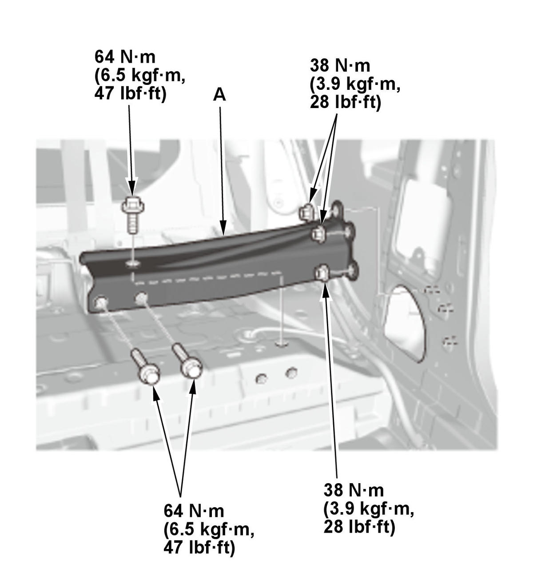

Removal and Installation
- Rear Side Trim Panel - Remove
- Middle Crossmember Gusset - Remove

Courtesy of HONDA, U.S.A., INC.1. Remove the carpet as needed. 2. Remove the middle crossmember gusset (A).
- All Removed Parts - Install
1. Install the parts in the reverse order of removal.